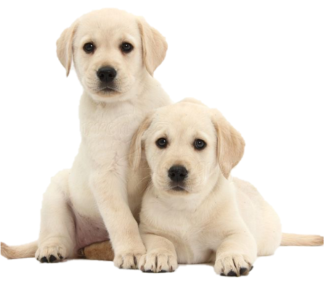

Приют «Дружок» - это
муниципальный приют
для бездомных собак.
Более 250 верных добрых собак ждут своего
хозяина. Большие и маленькие, пушистые и
гладкие, веселые и задумчивые - и на всех одна
большая мечта - встретить своего Человека и
найти Дом.
